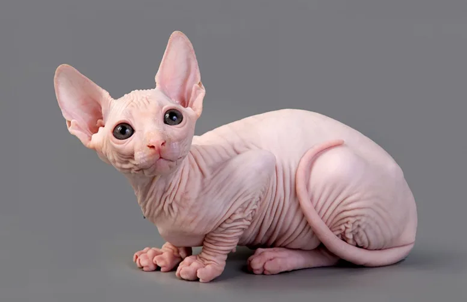
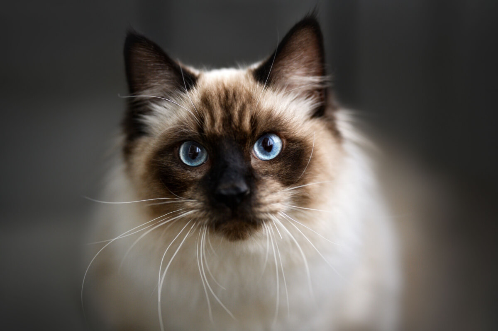
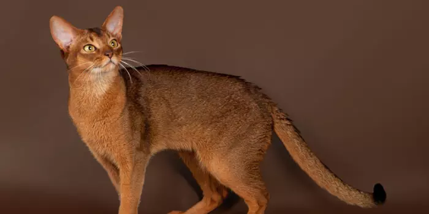
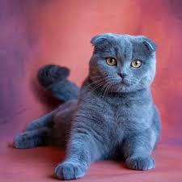
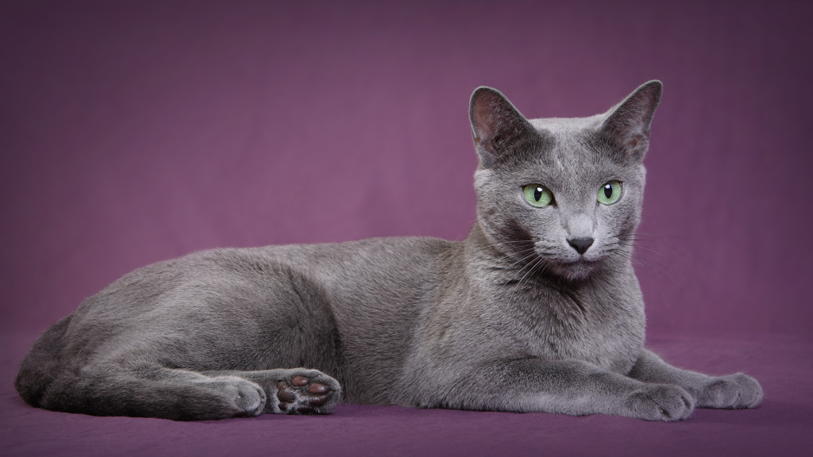
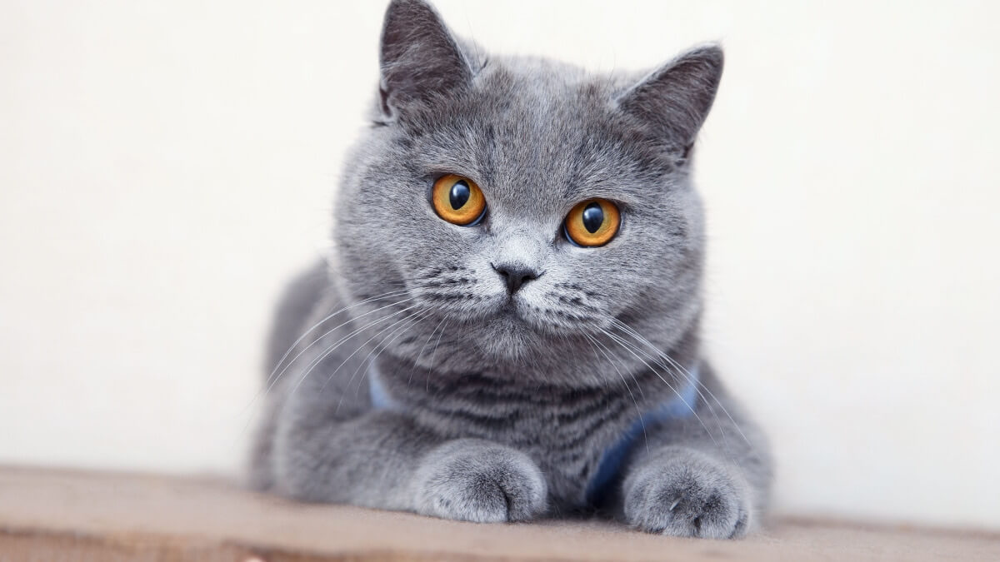
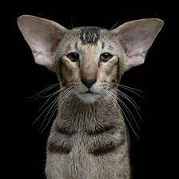
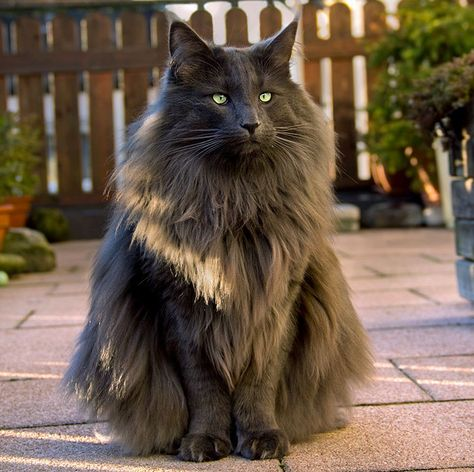
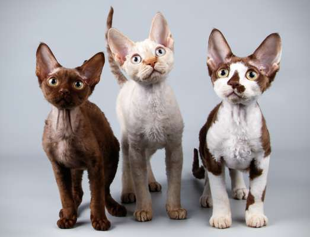
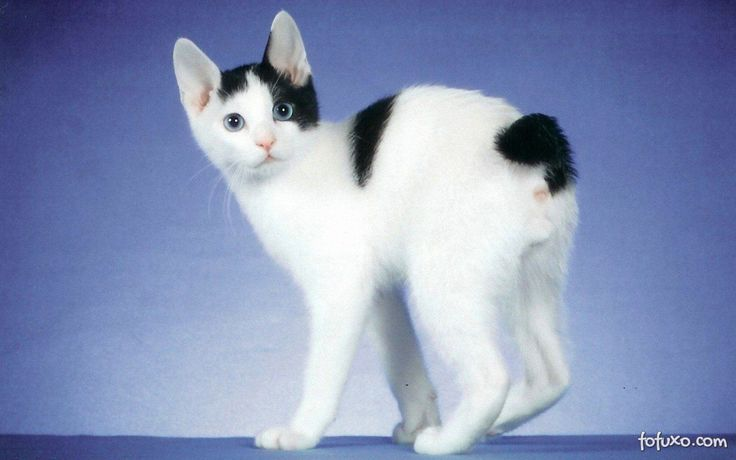

🐾 Bem-vindo à CatLover!
Se você é apaixonado por gatos, este é o seu lugar. A CatLover é muito mais que uma página — é um cantinho especial feito por e para quem ama o mundo felino. 💕🐱
Fundada em 2020, nossa missão é compartilhar amor, conhecimento e curiosidades sobre os gatos que encantam nossos corações. Quer você seja tutor de primeira viagem ou um gateiro veterano, aqui você encontrará conteúdos feitos com carinho. 💬✨
Navegue por nossas seções para descobrir:
- 📖 Raças e curiosidades: conheça a origem e as características de dezenas de raças felinas;
- 🧠 Dicas de comportamento: entenda como seu gato pensa e sente;
- 🎓 Adestradores parceiros: descubra especialistas que podem ajudar com amor e respeito;
- 📸 Galeria e carrossel: veja fotos fofas e inspire-se com os gatinhos mais encantadores da internet.
“Gatos são anjos com bigodes.” — 🐾
🐾 Junte-se à comunidade CatLover e venha ronronar com a gente!
Tipos de Gatos
Siamês
Origem na Tailândia. Gato elegante, sociável e vocal.
Persa
Pelo longo e temperamento calmo. Origem na antiga Pérsia (Irã).
Maine Coon
Gigante gentil dos EUA, com pelagem espessa e personalidade doce.
Bengal
Visual exótico como leopardo. Pelagem curta com reflexos dourados ou metálicos.
Sphynx
Gato sem pelos, com pele enrugada e corpo musculoso. Extremamente carinhoso e sociável.
Ragdoll
De porte grande e pelagem semi-longa, famoso por relaxar completamente quando pego no colo.
Abissínio
Pelagem curta, corpo atlético e curioso. Muito ativo e brincalhão.
Scottish Fold
Orelhas dobradas para frente, expressão doce e pelagem variada. Calmo e afetuoso.
Russian Blue
Pelagem azul-prateada curta, olhos verdes e personalidade tranquila.
British Shorthair
Corpo robusto, pelagem densa e personalidade muito amigável.
Birmanês

Pelagem semi-longa, olhos azuis e temperamento dócil.
Oriental Shorthair
Parente do Siamês. Corpo esguio, pelagem curta e comportamento extrovertido.
Norueguês da Floresta
Pelagem longa e adaptada ao frio. Forte, independente e muito elegante.
Devon Rex
Pelos encaracolados, orelhas grandes e comportamento brincalhão.
Japanese Bobtail
Gato com cauda curta e personalidade energética. Símbolo de boa sorte no Japão.
🐾 Adestradores da CatLover
Aqui na CatLover, acreditamos que o respeito, a paciência e o carinho são as chaves para uma convivência harmoniosa entre humanos e gatos. Por isso, contamos com adestradores especializados que trabalham com métodos positivos e não agressivos, focando sempre no bem-estar felino. 💖🐈
Seja para corrigir comportamentos indesejados, ensinar seu gatinho a usar melhor o arranhador ou ajudar em momentos de estresse, você pode contar com nossos especialistas!
-
🐱 Ana Felina
Com mais de 10 anos de experiência, é especialista em comportamento felino e trabalha com adaptação de gatos em novos lares. -
😺 João Gato
Focado em adestramento positivo, usa técnicas baseadas em reforço com petiscos e carinho. Perfeito para gatinhos teimosos! -
🐾 Luna Meow
Adestradora holística que utiliza sons, aromas e terapias naturais para tratar ansiedade, estresse e traumas em gatos. -
🧠 Dr. Tom Catson
Etólogo felino (especialista em comportamento animal), oferece consultorias para gatos com comportamentos complexos ou agressivos. -
🎓 Bella Ronrom
Instrutora de humanos! Ensina tutores a entender os sinais corporais e vocais dos gatos, promovendo uma relação mais empática.
💬 Quer agendar uma consulta ou tirar dúvidas com nossos especialistas?
Em breve, você poderá entrar em contato diretamente por aqui. Fique ligado! 🐾